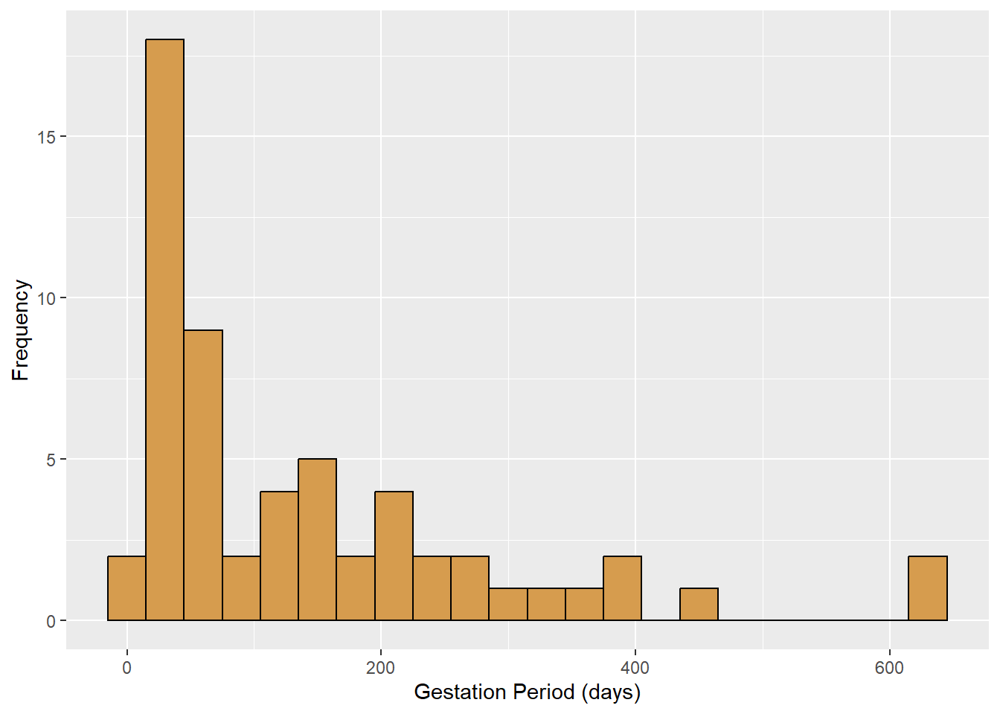
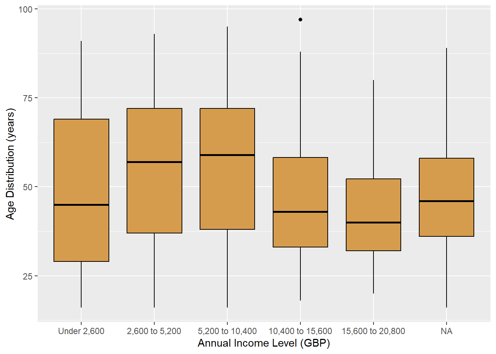
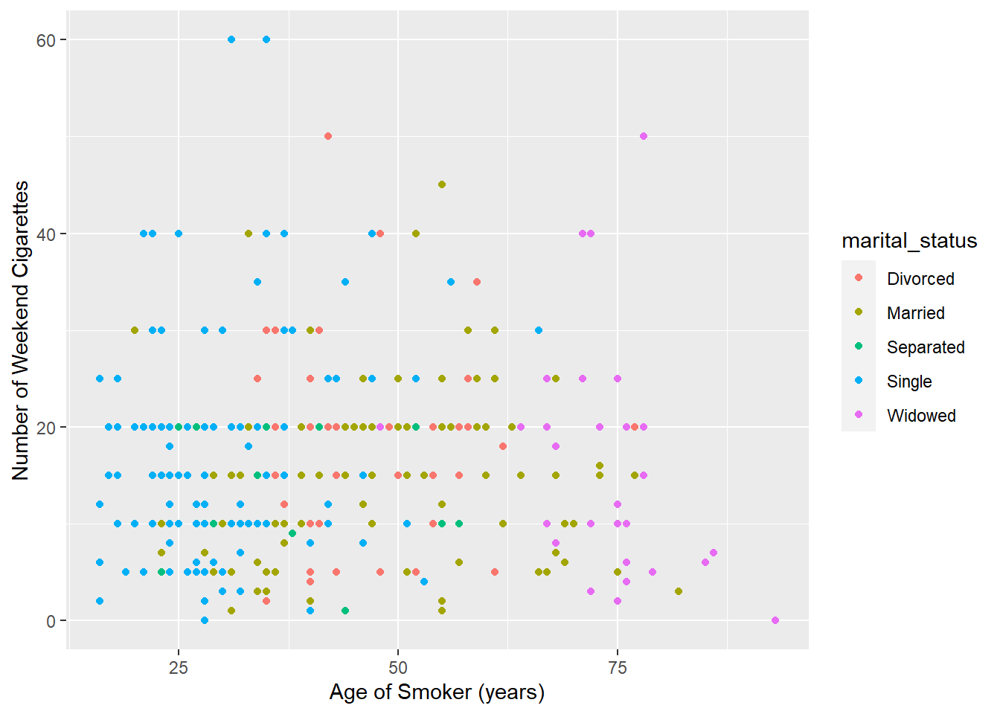

# Install and load the wesanderson package
if (!requireNamespace("wesanderson", quietly = TRUE)) {
install.packages("wesanderson")
}###add visualization package to make the colors better###
library(tidyverse)
library(openintro)
library(infer)
### add Wes Anderson palette for aesthetics ###
library(wesanderson)
ff <- wes_palette("FantasticFox1")
dj <- wes_palette("Darjeeling2")Directions: In this project, you will apply various statistical procedures covered in our course. Ensure to load the necessary R packages, including ‘openintro’ and ‘tidyverse’, render the library() function given above.
This code chunk below indicates how to load your data. If you use an OpenIntro data set, simply use data() function to load your data. If your data set is coming from any website as a .csv file, use read_csv() function to load it.
# data(datasetname) OR
# midtermdata <- read_csv("data-set-name.csv")
data(nyc_marathon)
data(smoking)
data(mammals)Part 1: Getting to Know Your Data Set
Question 1: Use the glimpse() function to introduce your data set. Write a short paragraph explaining key aspects.
glimpse(nyc_marathon)Rows: 102
Columns: 7
$ year <dbl> 1970, 1970, 1971, 1971, 1972, 1972, 1973, 1973, 1974, 1974, 1…
$ name <chr> "Gary Muhrcke", NA, "Norman Higgins", "Beth Bonner", "Sheldon…
$ country <chr> "United States", NA, "United States", "United States", "Unite…
$ time <time> 02:31:38, NA, 02:22:54, 02:55:22, 02:27:52, 03:08:41, …
$ time_hrs <dbl> 2.527222, NA, 2.381667, 2.922778, 2.464444, 3.144722, 2.36500…
$ division <chr> "Men", "Women", "Men", "Women", "Men", "Women", "Men", "Women…
$ note <chr> "Course record", "No woman finishers", "Course record", "Worl…glimpse(smoking)Rows: 1,691
Columns: 12
$ gender <fct> Male, Female, Male, Female, Female, Female, Male…
$ age <int> 38, 42, 40, 40, 39, 37, 53, 44, 40, 41, 72, 49, …
$ marital_status <fct> Divorced, Single, Married, Married, Married, Mar…
$ highest_qualification <fct> No Qualification, No Qualification, Degree, Degr…
$ nationality <fct> British, British, English, English, British, Bri…
$ ethnicity <fct> White, White, White, White, White, White, White,…
$ gross_income <fct> "2,600 to 5,200", "Under 2,600", "28,600 to 36,4…
$ region <fct> The North, The North, The North, The North, The …
$ smoke <fct> No, Yes, No, No, No, No, Yes, No, Yes, Yes, No, …
$ amt_weekends <int> NA, 12, NA, NA, NA, NA, 6, NA, 8, 15, NA, NA, NA…
$ amt_weekdays <int> NA, 12, NA, NA, NA, NA, 6, NA, 8, 12, NA, NA, NA…
$ type <fct> , Packets, , , , , Packets, , Hand-Rolled, Packe…glimpse(mammals)Rows: 62
Columns: 11
$ species <fct> Africanelephant, Africangiantpouchedrat, ArcticFox, Arcti…
$ body_wt <dbl> 6654.000, 1.000, 3.385, 0.920, 2547.000, 10.550, 0.023, 1…
$ brain_wt <dbl> 5712.0, 6.6, 44.5, 5.7, 4603.0, 179.5, 0.3, 169.0, 25.6, …
$ non_dreaming <dbl> NA, 6.3, NA, NA, 2.1, 9.1, 15.8, 5.2, 10.9, 8.3, 11.0, 3.…
$ dreaming <dbl> NA, 2.0, NA, NA, 1.8, 0.7, 3.9, 1.0, 3.6, 1.4, 1.5, 0.7, …
$ total_sleep <dbl> 3.3, 8.3, 12.5, 16.5, 3.9, 9.8, 19.7, 6.2, 14.5, 9.7, 12.…
$ life_span <dbl> 38.6, 4.5, 14.0, NA, 69.0, 27.0, 19.0, 30.4, 28.0, 50.0, …
$ gestation <dbl> 645, 42, 60, 25, 624, 180, 35, 392, 63, 230, 112, 281, NA…
$ predation <int> 3, 3, 1, 5, 3, 4, 1, 4, 1, 1, 5, 5, 2, 5, 1, 2, 2, 2, 1, …
$ exposure <int> 5, 1, 1, 2, 5, 4, 1, 5, 2, 1, 4, 5, 1, 5, 1, 2, 2, 2, 2, …
$ danger <int> 3, 3, 1, 3, 4, 4, 1, 4, 1, 1, 4, 5, 2, 5, 1, 2, 2, 2, 1, …The New York City Marathon dataset includes marathon times of winners in the New York City Marathon from 1970 to 2020.
Question 2: Determine the number of variables and cases in the data set.
summary(nyc_marathon) year name country time
Min. :1970 Length:102 Length:102 Length:102
1st Qu.:1982 Class :character Class :character Class1:hms
Median :1995 Mode :character Mode :character Class2:difftime
Mean :1995 Mode :numeric
3rd Qu.:2008
Max. :2020
time_hrs division note
Min. :2.085 Length:102 Length:102
1st Qu.:2.166 Class :character Class :character
Median :2.386 Mode :character Mode :character
Mean :2.350
3rd Qu.:2.456
Max. :3.145
NA's :3 summary(smoking) gender age marital_status highest_qualification
Female:965 Min. :16.00 Divorced :161 No Qualification :586
Male :726 1st Qu.:34.00 Married :812 GCSE/O Level :308
Median :48.00 Separated: 68 Degree :262
Mean :49.84 Single :427 Other/Sub Degree :127
3rd Qu.:65.50 Widowed :223 Higher/Sub Degree:125
Max. :97.00 A Levels :105
(Other) :178
nationality ethnicity gross_income
English :833 Asian : 41 5,200 to 10,400 :396
British :538 Black : 34 10,400 to 15,600:268
Scottish:142 Chinese: 27 2,600 to 5,200 :257
Other : 71 Mixed : 14 15,600 to 20,800:188
Welsh : 66 Refused: 13 20,800 to 28,600:155
Irish : 23 Unknown: 2 Under 2,600 :133
(Other) : 18 White :1560 (Other) :294
region smoke amt_weekends amt_weekdays
London :182 No :1270 Min. : 0.00 Min. : 0.00
Midlands & East Anglia:443 Yes: 421 1st Qu.:10.00 1st Qu.: 7.00
Scotland :148 Median :15.00 Median :12.00
South East :252 Mean :16.41 Mean :13.75
South West :157 3rd Qu.:20.00 3rd Qu.:20.00
The North :426 Max. :60.00 Max. :55.00
Wales : 83 NA's :1270 NA's :1270
type
:1270
Both/Mainly Hand-Rolled: 10
Both/Mainly Packets : 42
Hand-Rolled : 72
Packets : 297
summary(mammals) species body_wt brain_wt
Africanelephant : 1 Min. : 0.005 Min. : 0.14
Africangiantpouchedrat: 1 1st Qu.: 0.600 1st Qu.: 4.25
ArcticFox : 1 Median : 3.342 Median : 17.25
Arcticgroundsquirrel : 1 Mean : 198.790 Mean : 283.13
Asianelephant : 1 3rd Qu.: 48.202 3rd Qu.: 166.00
Baboon : 1 Max. :6654.000 Max. :5712.00
(Other) :56
non_dreaming dreaming total_sleep life_span
Min. : 2.100 Min. :0.000 Min. : 2.60 Min. : 2.000
1st Qu.: 6.250 1st Qu.:0.900 1st Qu.: 8.05 1st Qu.: 6.625
Median : 8.350 Median :1.800 Median :10.45 Median : 15.100
Mean : 8.673 Mean :1.972 Mean :10.53 Mean : 19.878
3rd Qu.:11.000 3rd Qu.:2.550 3rd Qu.:13.20 3rd Qu.: 27.750
Max. :17.900 Max. :6.600 Max. :19.90 Max. :100.000
NA's :14 NA's :12 NA's :4 NA's :4
gestation predation exposure danger
Min. : 12.00 Min. :1.000 Min. :1.000 Min. :1.000
1st Qu.: 35.75 1st Qu.:2.000 1st Qu.:1.000 1st Qu.:1.000
Median : 79.00 Median :3.000 Median :2.000 Median :2.000
Mean :142.35 Mean :2.871 Mean :2.419 Mean :2.613
3rd Qu.:207.50 3rd Qu.:4.000 3rd Qu.:4.000 3rd Qu.:4.000
Max. :645.00 Max. :5.000 Max. :5.000 Max. :5.000
NA's :4 The New York City Marathon dataset includes 102 observations with 7 variables.
The mammals dataset contains 62 observations with 11 variables.
Question 3: Identify the types of variables in the data set (nominal, ordinal, discrete, and continuous).
The New York City Marathon dataset has three nominal variables in it being the names of the runners, their competition division, and their country of origin. The discrete variables being the time the runners completed the marathon in. There are continuous variables being the year which the runners participated in the marathon.
The mammals dataset has a single nominal variable being the species of mammal and the rest are discrete variables, which include x and y and z.
Question 4: Choose a numeric variable and visualize its distribution. Describe the graph.
ggplot(data = mammals,
aes(x = gestation)) +
geom_histogram(binwidth = 30,
color = dj[5],
fill = dj[3])+
labs(x = "Gestation Period (days)",
y = "Frequency")Warning: Removed 4 rows containing non-finite values (`stat_bin()`).
The distribution is skewed to the right based on visual interpretation. Tests for skewness would include: xyz
Question 5: Choose a categorical variable and create a visualization. Describe the graph.
# Define the order of income levels
# Adjust these levels based on the actual data 'gross_income' column
income_levels <- c("Under 2,600", "2,600 to 5,200", "5,200 to 10,400", "10,400 to 15,600", "15,600 to 20,800", "20,800 to 26,000", "26,000 to 31,200","31,200 to 36,400", "36,400 to 41,600", "Over 41,600")
# Reclassify 'gross_income' as an ordered factor
smoking$income_order <- factor(smoking$gross_income,levels = income_levels, ordered = TRUE)
ggplot(data = smoking,
aes(x=income_order, y=age)) +
geom_boxplot(color = dj[5],
fill = dj[3])+
labs(x = "Annual Income Level (GBP)",
y = "Age Distribution (years)")
Type your answer here
Question 6: Use the geom_point() function to plot a graph showing the linear relationship between two numeric variables, colored by a categorical variable.
### first attempt was to use two continuous variables from mammals data, but coloring by a categorical value was difficult as each species is unique ###
ggplot(data = na.omit(mammals),
aes(x = body_wt,
y = gestation,
color= species)) +
geom_point() +
scale_x_log10() + #transform x axis
labs(x = "Body Weight (kg) (log10 transformed)",
y = "Gestation (days)")+
theme(legend.position = "none")
### second attempt was to use ###
ggplot(data = na.omit(smoking),
aes(x = age,
y = amt_weekends,
color= marital_status)) +
geom_point() +
labs(x = "Age of Smoker (years)",
y = "Number of Weekend Cigarettes")
The first plot showed the difficulty of having unique categorical values for each row. In this case species had a unique value for each row and could not render the legend.
In the second plot, using the smoking data, the relationship between age of smoker and the number of cigarettes smoked on the weekend amt_weekend is shown as a function of marital_status. In this case, there are several interesting relationships. Perhaps not surprisingly smokers that are widowed tend to be older, and single smokers tend to be younger. There appears to be no relationship, however, between age and number of cigarettes on the weekend, or with marital status. A potential postive correlation for single smokers, based on the plot, could be present indicating that older, single smokers smoke more cigarettes on the weekend, but that would need to be tested separately by subsetting those data and running a correlation test.
Part 2: Statistical Inference
In this section, you’ll perform inferential statistics tests using your data set.
One Sample \(t\)-test
In this section, you are expected to write a case study based on your data set. In other words, choose a numeric variable and conduct a One Sample \(t\)-test. Show your work.
Type your case here.
Question 7.1: What is the research question of this study?
Type your answer here.
Question 7.2: What type of variable do we have in this study?
Type your answer here.
Question 7.3: List the assumptions required for this test and check the assumption of normality for this study. Interpret the assumptions overall.
Random Sampling: Explain here.
Independence of Observation: Explain here.
Normal Distribution: Explain here.
# Type your codes here to check normality.Interpret your outputs here.
Question 7.4. Use a one sample \(t\)-test to investigate your research hypothesis. Answer the questions given below. Show your work.
Question 7.4.1 Write out the null and alternative hypotheses in words, in the context of this study.
Type your answer here.
Question 7.4.2. Determine the (\(\alpha\)) level.
Type your answer here.
Question 7.4.3. Calculate the t-statistic and explain what you see in the output.
# Type your codes hereType your answer here.
Question 7.4.4. Draw a conclusion and write a conclusion statement.
Type your answer here.
Independent Samples t test
In this section, you are expected to write a case study based on your data set. Choose a numeric variable and a categorical variable (with 2 CATEGORIES) conduct Independent Samples \(t\)-test. Show your work.
Question 8.1. What is the research question of this study?
Type your answer here.
Question 8.2. What type of variable do we have in this study?
Type your answer here.
Question 8.3. List the assumptions required for this test and check the assumption of normality for this study. Interpret the assumptions overall.
Random Sampling: Explain here.
Independence of Observation: Explain here.
Normal Distribution: Explain here.
# Type your codes here to check normalityInterpret the assumptions and type your reasoning.
Question 8.4. Use an independent samples \(t\)-test to investigate your research hypothesis. Answer the questions given below. Show your work.__
Question 8.4.1 Write out the null and the alternative hypothesis in words, in the context of this study:
Type your answer here.
Question 8.4.2. Determine the (\(\alpha\)) level.
Type your answer here.
Question 8.4.3. Calculate t statistic and explain what you see in the output.
# Type your codes hereType your answer here.
Question 8.4.4. Explain what each function does in this question.
t_test: Type your answer here.
formula:Type your answer here.
order: Type your answer here.
alternative: Type your answer here.
conf.level: Type your answer here.
var.equal: Type your answer here.
Question 8.4.5. Draw a conclusion and write a conclusion statement
Type your answer here.
One Way ANOVA
Write a case study based on your data set. Choose a numeric variable and a categorical variable (more than 2 categories) conduct One Way ANOVA. Show your work.
Question 9.1. What is the research question of this study?
Type your answer here.
Question 9.2. What type of variable do we have in this study?
Type your answer here.
Question 9.3. List the assumptions required for this test and check the assumption of normality for this study. Interpret the assumptions overall.
List the assumptions here and explain them.
# Type your codes here to check normalityInterpret the assumptions and type your reasoning.
Question 9.4. Conduct One Way ANOVA to investigate your research hypothesis. Answer the questions given below. Show your work.__
Question 9.4.1 Write out the null and alternative hypotheses in words, in the context of this study.
Type your answer here.
Question 9.4.2. Determine the (\(\alpha\)) level.
Type your answer here.
Question 9.4.3. Calculate F statistic and explain what you see in the output.
# Type your codes hereType your answer here.
Question 9.4.4. Explain what each function does in this question.
Question 9.4.5. Draw a conclusion and write a conclusion statement
Type your answer here.
Chi Square Test
Write a case study based on your data set. Choose a 2 categorical variable conduct Chi-square test. Show your work.
Question 10.1. What is the research question of this study?
Type your answer here.
Question 10.2. What type of variable do we have in this study?
Type your answer here.
Question 10.3. Please list the assumptions required for this test. Interpret the assumptions overall.
List the assumptions here and explain them. Interpret the assumptions and type your reasoning.
Question 10.4. Conduct a Chi-square test to investigate your research question
Question 10.4.1 Write out the null & the alternative hypothesis in words, in the context of this study:
Type your answer here.
Question 10.4.2. Determine the (\(\alpha\)) level.
Type your answer here.
Question 10.4.3. Calculate Chi-square statistic and explain what you see in the output.
# Type your codes hereType your answer here.
Question 10.4.4. Explain what each function does in this question.
Type your answer here.
Question 10.4.5. Draw a conclusion and write a conclusion statement
Type your answer here.